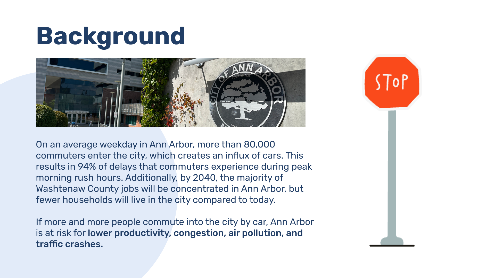
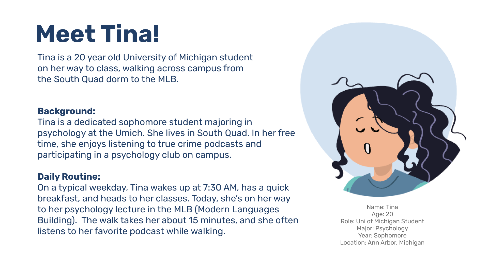
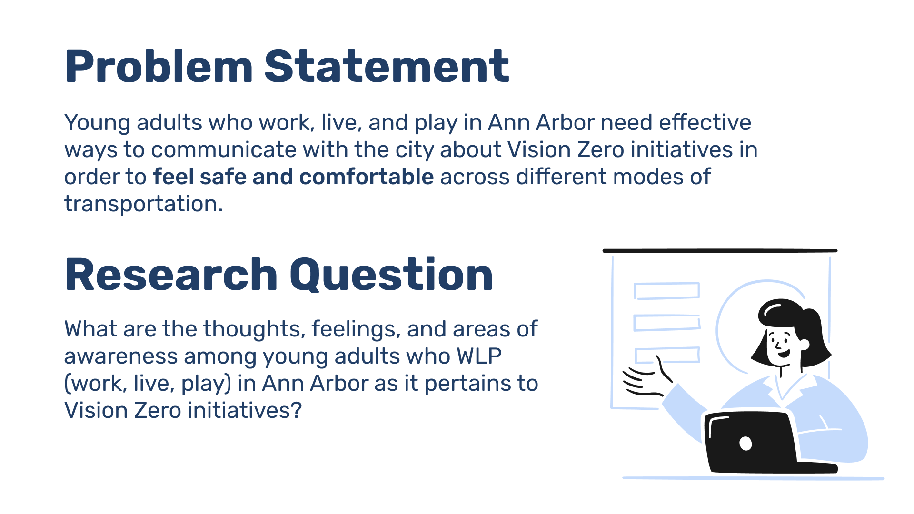
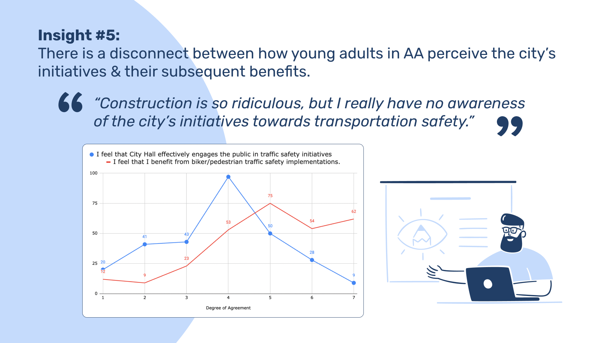
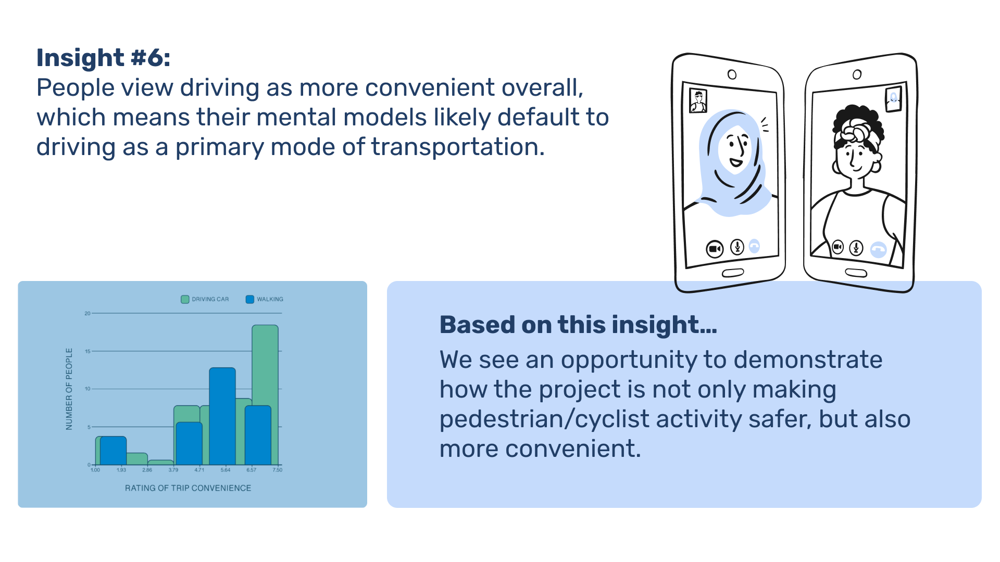
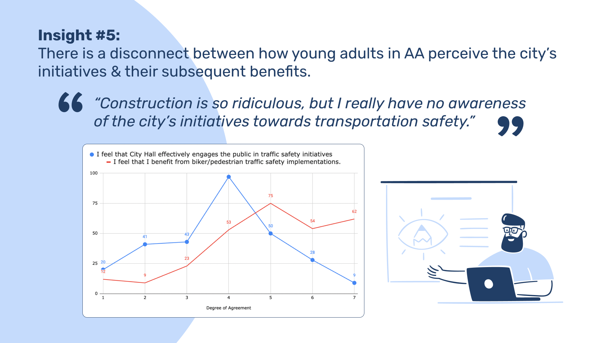
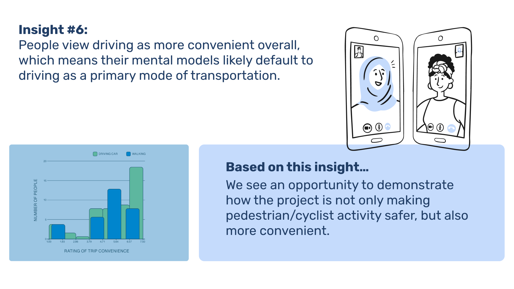

Move together: Commute Research in Ann Arbor City
Context:
During the summer of 2023, I participated in the SI 350: UX Field Research for
Public Sector course at the University of Michigan School of Information. This course
focused on applying UX research methodologies to solve challenges within public sector
environments. As part of a hands-on, team-based project,I focused on exploring the
communication needs of
young adults in Ann Arbor regarding Vision Zero initiatives, which aim to eliminate
traffic
fatalities and improve transportation safety.
Our research centered on understanding the thoughts, feelings,
and awareness of young adults
who work, live, and play (WLP) in the city. By conducting user interviews and
analyzing
behaviors, we identified key opportunities to enhance communication between the city and
this demographic to foster safer and more comfortable transportation experiences.
Role:
UX Researcher;
Timeline:
2023 Summer
Why Research?
Persona
Problem Statement & Research Questions
Methodology
Survey
Firstly, our team distributed a survey to 295 Ann Arbor residents. Of this
pool, 82% of
respondents were in our target demo of young adults, aged 19-29. Distributed through social
media forums, flyers with QR codes, and our personal networks, the survey captured the attitudes
and experiences of young adults on various trips driving, walking, cycling, or using the transit
system in Ann Arbor.
We also asked respondents about their awareness of and feelings
toward
Vision Zero. The survey was only open for 10 days, limiting the window for us to obtain
responses. Additionally, it should be noted that responses discussed travel in the Springtime,
and is likely not generalizable to the times when we are trudging through snow for 7 months out
of the year.
Finally, it is important to consider that the current student population
is
quite
low in comparison to the school year, and that survey distribution occurred primarily in
downtown AA, and may not fully represent all residents. This limited time frame, time of year,
and respondent sourcing is worth considering across our other research methods as well.
Interview
After initially distributing the surveys, we immediately began conducting interviews.
First,
we
facilitated street interviews with pedestrians, while scheduling more formal interviews with
survey respondents who indicated an interest. These interviews more directly inquired about the
knowledge, perceptions, and behaviors of residents regarding traffic safety as pedestrians or
cyclists. Interview data was analyzed and coded into affinity diagrams and empathy maps to see
if and how individual responses demonstrated patterns of how users think and feel about traffic
safety measures.
Observations & Travel Diary
To better situate ourselves in the context of traffic safety, we also observed residents
interacting with new traffic safety infrastructure, as seen in the map on the right. This better
framed our ambitions to view the problem statement through an experience/interaction design
problem.
Finally, throughout the past 4 weeks, our team has been recording travel diaries on our travels
throughout the city.
Along our routes, we noted the routes and method of our trip, as well as any notable safety
features or concerns that caught our eyes along the way.
Insights
From these various forms of research, we have arrived at 6 key insights that provide opportunities for the city to better inform and engage young residents.
 


